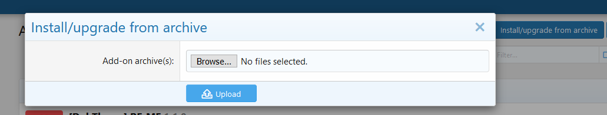
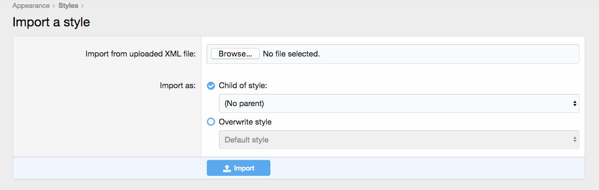
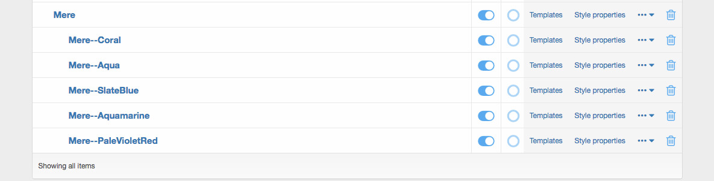
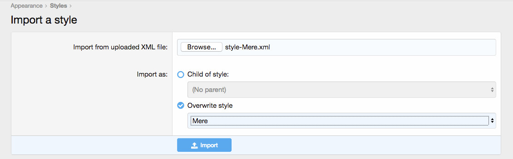

Documentation
Using ReMe - A Powerfull Framework From DohTheme
1. Package
The package contains the following three folders: “Documentation”, “XMLs” and “upload”:
“Documentation”contains the style documentation“01_Install_addon”contain archive file to install the add-on for node background“02_Import_style”contain archive file to import the style for your XenForo version
2. Installation
To install the style you must follow these steps. It is very important to install the style as written bellow.
- Log in to your forum administrator control panel, go to the Add-ons tab click
Install/upgrade from archiveclick press “Browse”, find your add-on archive-file and click Upload

- in Admincp, go to the Appearance tab — Styles — Import.
- Under the Import from uploaded XML or archive file section, press “Browse”, find your main style archive file
style-[THEME-NAME].zipand import it by pressing “Import” button at the bottom without changing any other settings.

Note If style has different color schemes. You must install the core style file first before installing any other color schemes.
- Repeat This step for colors but set Child of style option and choose the core style name from dropdown menu.
When you complete importing you will see style hierarchy like that in Appearance tab — Styles

3. Update
To update the style you must follow these steps.
- Log in to your forum administrator control panel and go the Appearance tab — Styles — Import.
- Under the Import from uploaded XML or archive File section, press “Browse”, find your main style archive file, set “Import as” option to “Overwrite style” and choose the core style name in the dropdown menu. 